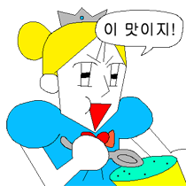
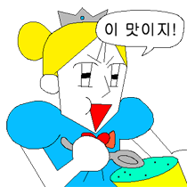

우선 여린님은 당장의 회복이 우선이다. 여린님은 자신이 이렇게까지 아프고 힘든거에 굉장히 서러울것이다(공주야ㅠㅠ)
지금 당장의 뇌압을 진정시키기위해선 감정적일수록 치료는 더딜수밖에없는건 자명한 사실이다. 마음을 씩씩하게 먹고 너무 서럽더래도 조금은 이성적이여야한다.
우선 감정적인것도 감정적인거지만, 주위에 스트레스 받는 요인을 줄일수있는건 최대한 줄여보자. 밤에 코골이빌런은 간쌤한테 말해서 적절한 조치를 취하거나,그게 되지않는다면 귀마개라도 하나사서 소음을 최대한 줄여 스트레스를 안받는 등 포카리를 먹고싶으면 어머니께 사달라고 한다던지, 요구할수잇는건 최대한 요구하자. 눈치보지마라 누가 뭐래도 여린님의 건강회복이 1순위이다.
안좋은 생각과 부정적인 생각은 최대한 줄이자. 생각을 하지않는건 아무래도 어렵다. 부정적인 생각이 들때면 차라리 휙 다른 생각을 한다던가 명상을 한다던가.. 아무튼 부정적인 생각은 꽤 여린님에게 많은 스트레스를 준다. 최대한 긍정적인 생각을 가져보도록 하자. 나는 언제나 당신편..
 
